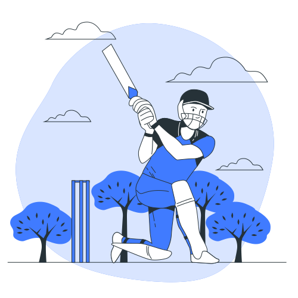

King Kohli Comeback 👑🏏!
Nov, 2022

A normal Sunday in my life that resulted in one of the most memorable days, all thanks to King Kohli!
Hello, I don’t really know what brought you here & why you should read all of this, but this is my first blog
and I hope that every one will enjoy by reading this blog.
Hold up Everyone, you already know about the T20 match of India vs Pakistan.
Although I call Saturdays & Sundays usual but recently (about a month), I was excited to watch this natch along with my friends.
There’s me(SK) wearing India jersey, one little brother(RK), five of my friends(SP, AK, MR, AR, DG).
LOL, not disclosing any of their names, hope they start writing their own blogs (whatever you call this thing)
soon.
Adding some details, we woke at a very usual hour of waking on sunday i.e. 9 AM, kinda drowsy, kinda IDK.
Clock’s at 1:30 PM is when the play starts.
It’s the IND vs PAK match. Okay, let me give you some more context. The match played on Melbourne Cricket Ground(MCG).
TOSS TIME!!! 📢
India Pakistan. In the blue corner, Rohit Sharma India Skipper. In the Green Corner Pakistan Skipper Babar Azam.
Rohit Sharma flip the coin and won the toss. Decided to bowl first.
FYI:
MATCH BEGINS!!! 📢
Today’s brief — 🏏🏏🏏🏏🏏 The 11 Indian tigers🐯🐯 in MCG stadium amidst intermittent showers today on Pakistan .
First over by Bhuvneshwar Kumar Right-Arm-Fast-Medium.
On Strike end Babar Azam who's T20 rank is 3 & on Non-Strike end M Rizwan.
The ball started swinging gave a difficult start to pakistan opener and brilliant spell by Kumar.
FYI:
Pakistan First Wicket
Second over by Arshdeep Singh.
I started believed that Arshdeep will give his best performance today.
I truly appreciate the Indian Team bowling unit (India’ captain), also the most senior player in their team. A total cricket enthusiast.
I can’t imagine a person aging 35 years, leading team India. Although this T20 was really bad for him but sill I support him.
Now, Coming to the first ball of Arshdeep in T20 world cup to Babar Azam hard-cutting ball to Pakistan Skipper. Hurrah! Arshdeep got LBW to B Azam.
and now Pakistan score was 1 run with 1 wicket and my all friend started celebrating 🎉🎉🎉.
Plot twist🔀: Just before the match begins, one of my friends said that pakistan opener will shatter India bowling side😢.
2nd Wicket M Rizwan Pakistan Top order batsman got out on Fine Leg!
A poor pull shot on fine leg by Rizwan.What an Excellent ball by Arshdeep.God that was an absolute beauty.
PAK 15-2
IFTHIKAR STORM⛈️⛈️ Having found themselves in a spot of bother at 15/2,
Pakistan needed a solid, sustained recovery and it came through Iftikhar and Masood.
The duo survived the nervy phase and steadily guided Pakistan out of choppy waters with a 76-run partnership for the third wicket.
However, the scoring rate was quite slow. And soon Axar Patel was introduced to bowl the 12th over and
Iftikhar targeted him with three sixes in it and also completed a well-compiled half-century.
Wicket of Ifthikar
A timely bowling change that saw Mohammed Shami being brought back for a fresh spell gave India a massive breakthrough as Iftikhar was trapped lbw on 51.
INDIA leading!!! Woohoo🎉🎉🎉
91-3
I know you must be thinking where’s my presence in the game so far. If I were you reading this, I would’ve already
judged the person writing this to be the one maintaining scoresheets 📃 or another Google match commentary🎤
API (technical, don’t overthink).
Give me some time, I’ve done wonders ahead LMAO.
Time to speed run the match commentary🌪.
Kung-Fu Pandya Ifthikar wicket triggered a mini collapse and
allrounder Hardik Pandya feasted on Pakistan batters taking three wickets in two overs to leave them struggling on 115/6.
Ending of First innings:Another recovery followed and now Masood at the centre of it.
He went on to complete his half-century as well.
With India pulling things back in the middle overs,
they were again struck by the menace of 19th over as Arshdeep
leaked 14 runs in it including a six to Shaheen Afridi.
Bhuvneshwar Kumar though bowled a decent 20th over from which Pakistan managed 10 runs to give themselves a fighting total..
📢PAK: 159/8
through non-stop hustle.
BREAK TIME
Since the score was Average to chase 160, but the pakistan bowling side was dangerous to us for chasing 160.
I already had a thought that pakistan bowler will break the Indian Opener. So I cross my finger for Rohit Sharma
to be there till last over.
SECOND-INNINGS STARTS!!!📢📢📢
India had a good chances to chase the target, since most of our player had knowned the pitch very well of Melbourne.
IND: 7-1
COLLAPSE OF OPENER, the Game started getting intense, and then KL wicket put a huge hole in for team India as this was not a good batting in Powerplay.
Some of my friend just stop watching the match.
After KL Rahul, the Captain also got out when team needed him the most🙌. It was really hard for us to imagine that Captain got catch-out by Haris Right-Arm-Fast-Medium.
DISSAPPOINTMENT INCREASES
SKY Wicket , Slightly short from Haris, and SKY pounces on it. Does not bother to go back, just stands and pulls for four.
Haris bowls short again, this time SKY tries to play it over the slips and
manages a tame edge, MASSIVE wicket for Pakistan!
PAKISTAN COMEBACK
Axarrun out. Axar pushes Shadab’s first ball to mid-wicket and sets off,
but Kohli sends him back – and rightly so. Rizwan almost fails to gather but he somehow,
amidst the confusion, he knocks the bails off. The fielders are not enthusiastic, but Rizwan had actually done his bit.
And After Axar Wicket I just stop watching the match and we all thought that Pakistan is going to win the MATCH.
FYI:
Don't lose the will to fight!
KING KOHLI INCREDIBLE SIXES
Means a lot if you’ve stuck with my monologue till this moment, I promise I won’t disappoint
you hereafter.
We all boys just started playing football.
“Today I will play the best innings of my life.”
- Virat Kohli
My cousin started calling me. Come here and watch the match, Kohli started smahing Six and last 3 over are remaining and I asked him how much wicket has fallen.
He said: Only 4. I was suprised that they did not lost the wickets from Powerplay.
So we decided to watch the match on mobile on Hotstar. Since the screen was small, we all did manage.
2 sixes, India needed 160 runs to win the match, which team India reached on the last delivery.
However, India needed 28 runs off 8 balls to win the match and it looked like Virat won't be able to
take team India to victory despite being not out, but two sixes which came out of Virat's bat were I become the
fan of Kohli and I am gonna remember him for many years for what a knock he played.
On the 5th ball of the 19th over, Virat smacked Haris Rauf while staying still on his ground.
This six by Virat was so classy that one'd see it again and again on repeat.
After seeing this six, even captain Rohit Sharma's mouth was left open.
After this when 22 runs were needed off 7 deliveries,
Virat Kohli dispatched the last delivery over fine leg for another six.🚀🚀🚀🚀🚀
we all started dancing on the ground and just waiting to burn the fire crackers for India Victory.
THE UNEXPECTED LAST OVER
The last over of the game, which had everything- 1s, 2s, 3s, four, wide, no ball, free hit, catch, clean bowled, run out, stumping.
India needed 16 runs off the final over from Mohammad Nawaz, here’s how things unfolded:
Catch out
Pakistan drew first blood when the all-rounder attempted to smash the ball on the leg side,
only to edge the delivery to the covers where captain Babar Azam pouched the catch.
Single
Dinesh Karthik gets a full toss and swatted it down to long-on for a single.
Double
Kohli dragged a yorker to long on and took two to keep the strike.
Six and no ball
Nawaz’s high full toss is smashed by Kohli over deep square leg, where the fielder on the ropes
gets a hand to it but fails to keep the ball in play, and it goes for six. The umpire also calls a no-ball for height.
Clean bowled off a free hit
Nawaz cleaned up Kohli and they run three by the time the throw came in from the third-man region.
Stump or run out
Karthik tried to make room for a shot but the ball hits his pad.
Alert Mohammad Rizwan was quick to react and whipped the bails off to complete the stumping.
Wide ball
Pressure gets to Nawaz again and he bowls a wide down the leg side that Ashwin gleefully leaves.
My all friend were amazed by Ashwin smart moves.
Four
Ashwin scooped the ball over the inner circle and ran to the other end with his arms raised.
Thank you so much for your time 🙏